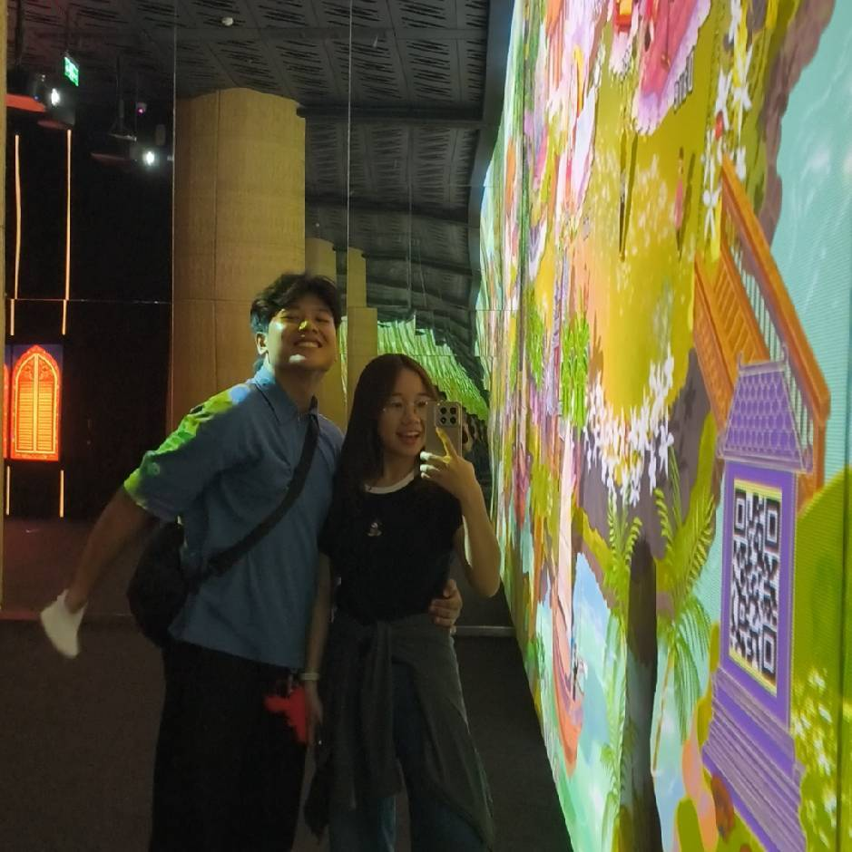
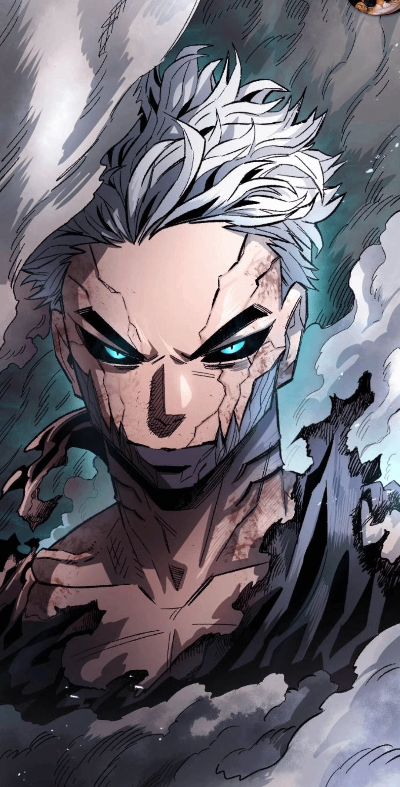
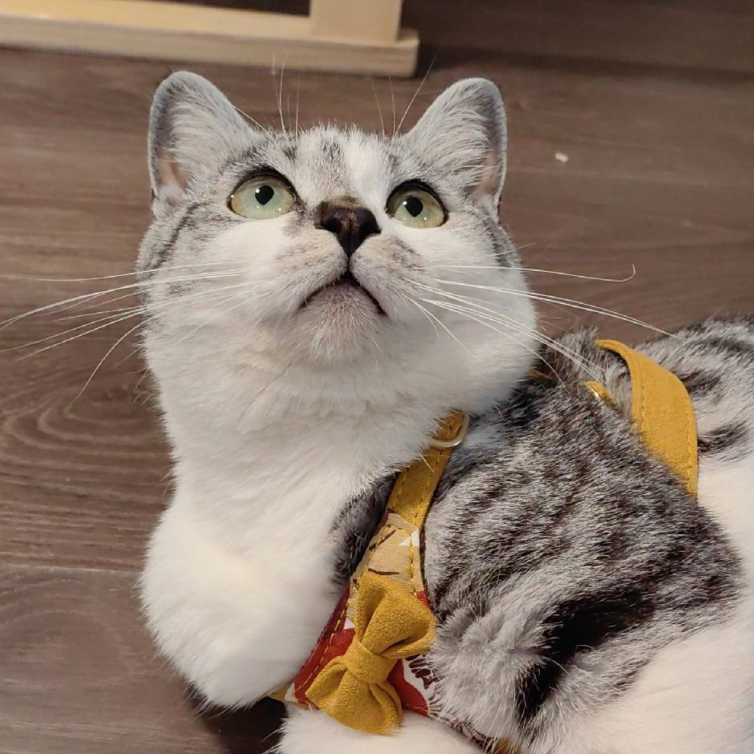

We apologize, but this portal requires a wider screen. Please view on desktop or in a wider screen.
Ethertreo Workshop — Shipwright's Countdown: Civilization's Future
我是徐思佳，在本次《造船匠的倒计时：文明的未来》游戏开发项目中，担任项目CIO。我的主要工作是统筹小组全部课程作业，对各类项目材料进行汇总整理、格式校对，按照课程要求完成按时上传与提交。同时我参与项目计划书的撰写工作，整合团队的游戏设计资料，完成文档的排版、目录调整与内容梳理。此外我统一收集整理小组每位成员的每周项目开发日志。在小组协作里，我确保整套项目文档材料完整规范，及时查漏补缺。

你好，我是邓明善，来自印度尼西亚，目前是北京理工大学软件工程专业的一名学生。在这款令人兴奋的新游戏项目《造船匠的倒计时：文明的未来》中，我担任游戏设计师一职，负责塑造游戏的整体体验和愿景。
加入这个团队是一次绝佳的契机，让我得以迈入全新的领域并习得新鲜技能。这实际上是我第一次尝试像素艺术创作。刚开始时，我并不确定会发生什么，但创造和逐像素打磨这些视觉元素的过程让我倍感惊喜，并深深沉浸其中。看着一个世界通过如此独特而经典的艺术风格逐渐成型，给人一种源于内心深处的满足感。
在设计工作之外，我花费了大量时间去探索软件运行背后的深层机制，尤其是代码结构如何直接影响性能与可扩展性。在技术的严谨与创意的设计之间架起桥梁，正是驱动我前行的动力所在。我非常期待迎接本次构建中的后续挑战，尝试全新的概念，并见证我们所有人的心血最终汇聚成完整的作品。
我是赵一诺，我参与的项目是《造船匠的倒计时：文明的未来》。
本项目名称为《造船匠的倒计时：文明的未来》，是一款主题向游戏开发项目。项目开发期间，在组长完成主体代码的基础上，我负责通读项目已有代码，理解整体逻辑结构，并参与补充、新增部分代码内容，协助完善项目功能。
除游戏开发工作外，我的核心任务是完成课程小周期作业，独立进行网页开发，搭建页面结构、调整样式，实现网页布局与交互效果。同时坚持撰写工作日志，如实记录每日开发任务、遇到的问题、调试过程以及学习收获，梳理项目进度。
在整个项目过程中，我熟悉了代码协作流程，锻炼网页前端开发能力，学会团队配合，积累项目实战经验。

嗨，我是宋理，我是 Ethertreo 工作坊游戏学生游戏开发团队的作者和监督者。 我处理角色，资产，历史，文化，主题和互动写作和设计，将每个人的投入和任何形式的灵感自由拼凑在一起，用机制的任何部分讲述一个有意义的故事，并增强舒适的 SIM 游戏的传说。 此外，每当叙述方面处于休息状态时，我都会帮助委派小组成员的任务，组织任何形式的任务，以及回答任何问题并负责整体研究。
这是我的第一个游戏，以前从未帮助过关卡设计或实际实施，但我有大约 10 年的经验为游戏设计和游戏传说书籍撰写短篇小说 / 小说。 我从来没有接受过任何正式的文学教育，也没有接受过任何形式的计算机教育，除了普通高中计算机科学，主要是实际的试错蛮力和自学成才的观看其他小型独立游戏开发商。 尽管从未参与过任何技术项目，但我有足够的草稿工作来涵盖尽可能多的流派，美学，主题和角色，以拓宽我的视野，涵盖故事，因为阅读是我最喜欢的爱好，我希望通过页面分享有意义的娱乐故事，特别是我不可避免的真实个人游戏开发项目，但我最喜欢的方面是在角色中隐藏更深层次的叙事元素，并在情节序列中挑战玩家和读者找到已经 设置相关的方面，因为我相信游戏玩家文化总是能找到隐藏在任何游戏中的有趣复活节彩蛋。
在这个项目中，我很高兴看到其他人的观点，他们喜欢输入什么，以逃避我对美学口味的偏见，并学习如何抛光水平开发和资产创造，特别是作为一个具有可怕艺术技能的人，我相信像素艺术风格是我最喜欢的独立游戏创意美学形式。
有趣的事实，我最喜欢的游戏和灵感在工作中，我试图创建如下；上古卷轴 5 天际线，其低要求非常自由的开放世界幻想 RPG 让玩家觉得一切皆有可能，他们可以在任何地方做任何事情，而不会感到被困在线性线中，但所有可用的路径都足够有创意，你不会感到无聊，即使是社区创造性的错误也被利用和愉快。 接下来是臭名昭著的另一个开放世界现在科幻综艺和个人我最喜欢的游戏一直有开放世界，但这次的主要故事是非常引人注目的，给予能力的道德复杂性取决于邪恶的特定系统或良好的特定技能的道德体系完全锁定，所以你必须权衡任何一方的重量不能两者兼而有之，它叙事性地改变了你的行为方式，每个人都如何与你互动，这是一个有趣的游戏玩法 具有复杂的道德开放世界自由游戏对于在可重放机制下分层叙事元素和重要主题真正鼓舞人心。
Baldurs gate 是 ULTIMATE 游戏创意的 Dnd Player 和粉丝的最后一个例子，游戏和定制超越了任何和所有真正的游戏，如果他们希望感受到游戏创造力的程度，我希望与其他人分享。

我是赵习君，在本次《造船匠的倒计时：文明的未来》项目中，主要承担关卡小游戏设计与辅助开发、以及项目宣传与记录相关工作。项目开发期间，在了解代码基础框架的前提下，我负责协助组长进行游戏主体之外的玩法补充，围绕关卡内容设计并实现小型互动游戏，丰富游戏的趣味性与可玩性，同时尽可能保证新增内容与项目整体风格、主题表达保持一致。除此之外，我也担任小组内介绍视频、宣发测试视频的剪辑工作，根据项目进度整理素材、调整节奏、搭配字幕与画面，使视频能够更清晰地展示项目特色和阶段成果。同时坚持撰写工作日志，记录每日成果，稳步推进项目进度。
我是颜键杨。在我和团队正在制作的这款名为《造船匠的倒计时：文明的未来》的游戏中，我担任我们工作室“Ethertreo Workshop”的主程序员。
在许多方面，这对我来说既是第一次，又不算第一次——虽然我之前参加过几次 Game Jam，也经历过大量的熬夜写代码，但如此大规模地使用 HTML、CSS 和 JavaScript 确实还是头一回。因此，我预料到在这个过程中可能会遇到不少困难，但这对我而言将是一次极好的学习锻炼机会。
尽管如此，我非常期待与团队成员紧密合作，希望能把大家对这款游戏的所有想法都完美呈现出来。